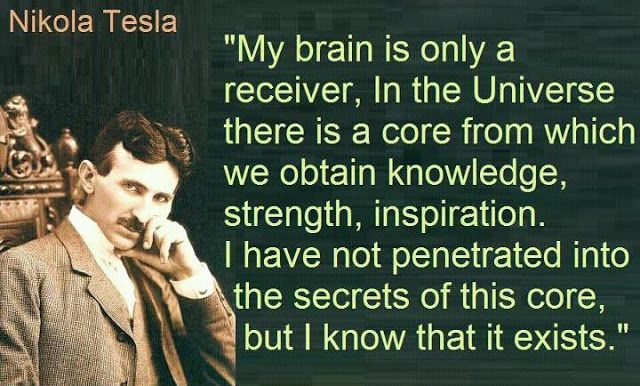
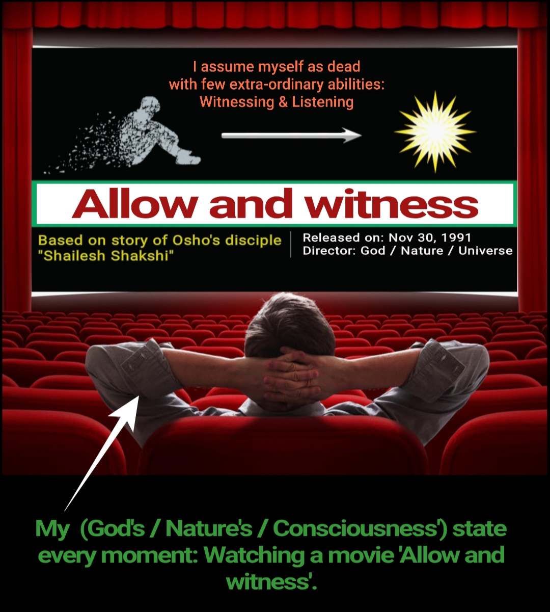
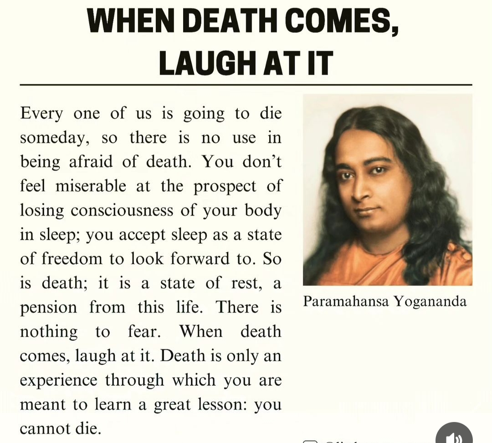
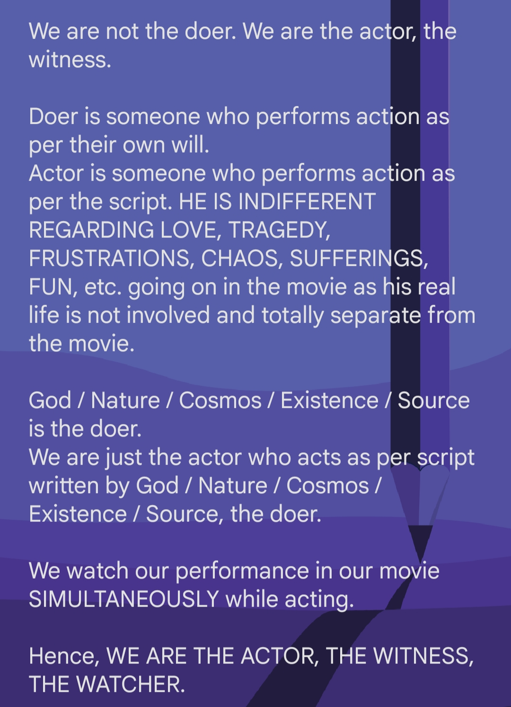
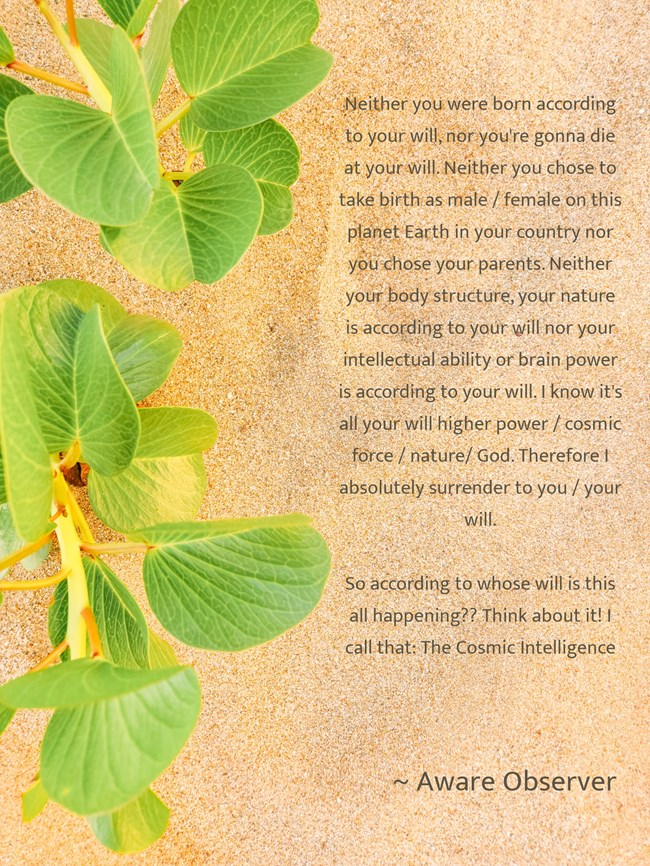
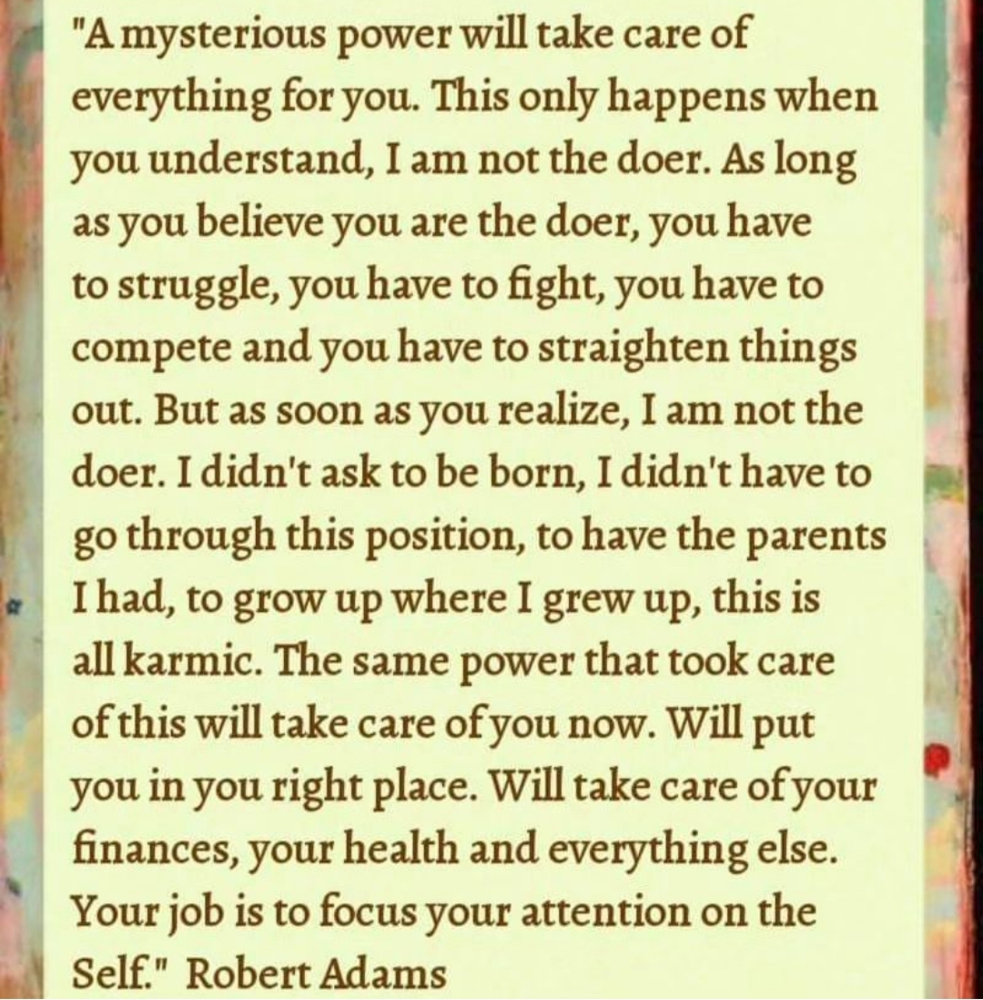
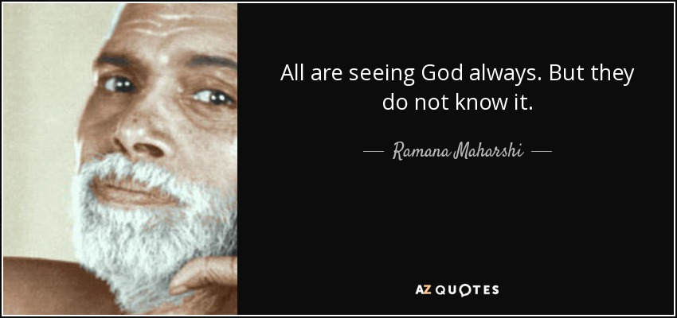

Is Life Serious??
Life is not serious. You are serious. Life is not anything serious; nothing can be more nonserious than life. Life is absolutely nonserious! Question: BUT CERTAIN THINGS HAVE BEEN ACHIEVED ONLY BECAUSE SOME PEOPLE HAVE BEEN - MAYBE THE WORD 'SERIOUS' IT IS NOT GOOD, BUT, RATHER, 'INTENSE'. Intensity is a very different thing from seriousness. If you are serious, you can never really be intense; you can only be tense. That's a different thing. With seriousness, you can never be intense and deep. You will always be shallow. Life is not serious at all. It is just a nonserious play - with nothing to be achieved, with nowhere to reach. It is just a play, with no end. Serious is always end-oriented. It means that you are living in order to achieve something, and life will be meaningless if you don't achieve it. This is seriousness: the means lies in the end, not in The here and now. The end must be achieved. If you achieve it, then it is okay. If you don't achieve it, then everything ii lost. You are serious because you have made some condition for your life. You have identified the meaning of your life by some condition that has to be fulfilled. But you can never achieve anything because nothing is static, everything is constantly changing. You fix something today, but by tomorrow nothing is going to be the same. Not even you will be the same; everything will have changed completely. But in your mind, the end remains the same. The whole situation has changed now, so you can never achieve what you want. That is why there is so much frustration Why so much preparation? You try, you think, you plan, you work, and then there is no achievement. The thing that you desire never happens, it never comes. If life was a static, fixed thing - not dynamic and flowing - then you could achieve what you wanted, but then life would be a death. Life is life because it is dynamic, changing. You cannot predict its course, it is unpredictable. It is dynamic and flowing - always flowing nowhere. If you are serious, then you cannot flow. Then you are frozen inside; then you become just a dead stone. Then there are resistances around you. You cannot melt, you cannot change as life changes. You have a fixed pattern, a fixed shape, and because of that shape you will resist change. Then you are not flowing with life, you are struggling against it. Seriousness creates frozenness, and frozenness creates struggle. You can just let go. Be ready to be anyone, to be anything, to be in any shape at all. Any shape is good: trees are good and dogs are good and man is good. If you are ready to be anything at all - anything that life requires - you will be more alive, you will be able to live more intensely. Intensity is killed when you have become identified with a particular form, a particular way of being. Then you are shallow because you are concerned with your form not with your being. Then you will be tense, not intense. It you are ready to exist in any way whatsoever then you have become part of the ocean of life. Then there are no more waves, there is no rising and falling. You have become the ocean itself. You are ready to be anything: to rise or to fall, be or not to be, Then you can flow with everything. And the more you flow, the more alive you are. So if you know life, you know that life is not serious at all. Religious people have made it serious because they a!c anti-life. But to me, that is not religion at all. That is just a metaphysics for suicide. To me, relig on means a very non - serious attitude: very childlike, very innocent. A serious person can never be innocent, and one who is innocent can never be serious. They are contradictory; they cannot exist together. A child is never serious, but he is very intense. In everything he does, he is intense. If he is playing he is intense; if he is angry he is intense. But an old man is never intense. Hi is serious. He will turn even play into work because his play becomes a fight, a struggle; a competition. Their is either defeat or victory. All kinds of nonsense will emerge, it will not be just a play. Intensity is something else. It is not seriousness, it is something altogether different. Whenever there is seriousness, sadness is about to come. You cannot enjoy seriousness, you cannot laugh with seriousness. Saints have never laughed. Sadness is bound to be somewhere around the corner, always. Seriousness is sad, it cannot laugh. And even if it laughs, it is only a release mechanism. The laughter is not innocent it is only a release mechanism. A serious person can laugh but it is only to release the tension of seriousness. Then again he is ready to be serious, and more tensions are accumulated. If I tell a joke, I create tension in you, expectation. curiosity. What is going to happen? How will it turn out? You become tense with expectation. You become serious, your mind begins to work. How is the joke going to end? if it ends just as you expected it to, you will not laugh because then there is no release. But if the end turns out to be completely unimagined, if it is a complete turnabout; if you never expected that this could be the end, then the tension that has been brought to a climax is released. You laugh. But the laughter is not innocent because it is just a release of tension. Every joke has to create a tension in you. Then, when you laugh, you feel released. Innocent laughter is something very different. It is not a release mechanism, it is a way of living. It is just a way of living! Take laughing as a way of living. Exist as laughter You will be absolutely nonserious. It may be that you will not be able to achieve anything, but what is the meaning of achievement? Even one who achieves - what does he achieve7 Even when achieving, nothing is achieved. Then whole absurdity is this: that even if you achieve something, nothing is achieved and nothing lasts. But the nonachieving mind gains much, without gaining anything. Every moment, one who has a nonachieving mind gains. What he gains may not be something very beautiful - in the end he may not have achieved anything - but he will be rich inside. Every moment was rich: the achievement is in the being. He may not be a great man, a famous man - a great scientist, a great painter - he may be no one really, but he can die peacefully; he can die lovingly. He is rich inside. Life, as it was, has given much. Nothing was snatched, nothing was taken with a struggle. It was a blessing, it was a beatitude, it was a benediction. As it was without any conditions. The mind that is trying to achieve is saying to life, to the whole cosmos, "I can be happy only if 'this' is happening." The person is living with a condition. You cannot place any conditions on the whole. The whole will never hear your conditions, you will never feel any resonance from the whole if you have any conditions. Your own condition will become a stone around your neck. You will be crushed under it, by your own hands. It is not that the whole crushes you: you crush yourself with your own stone. Your conditions create a barrier between you and the whole. The whole cannot flow in you because you have a condition. You say, "Come in. But first fulfill this much.." Then the whole cannot flow in you and you cannot flow m the whole. Then everything is crippled and diseased. Don't place any conditions on the whole; don't make any bargains with the whole. Don't compete with the whole, don't struggle with the whole, and then you will be holy. Flow into the whole and let it flow into you. Unconditional movement, unmotivated movement. Then you will be non-serious, intense. You will live blissfully; there will be no possibility of sadness. Then there can be no frustration, it is impossible. No one can frustrate you. Whatsoever happens is good. Then good is not something opposite to bad; it is just a feeling. Whatsoever happens is good: there is nothing opposite to good. This I call a religious mind: nonserious, playful, innocent - without any struggle. Someone has written me a letter. He writes that he believed in someone as if he was bhagwan, a God. For fifteen years continuously he believed in him. Then one day he saw that the man he had believed in was angry He writes that on that day not only did that man become just human - not a God - but from that day on "I cannot believe that any human being can ever be bhagwan, can ever be a God." I have written to him that there are two possibilities. "If one whom you believed to be divine became angry, there are two possibilities. Either this man is not divine - or your definition of divine was wrong!" But no, your definition can never be wrong. This man who you thought was divine must be wrong. Your definition is more meaningful to you than fifteen years of faith and rust. But who says that the divine cannot be angry? Who says it? We don't know, but we have a particular definition. Who says that the divine cannot be angry? Of course a divine person must be angry in a divine way - that's another thing. We have certain definitions. But life always transcends definitions so we are frustrated. Because of our definitions we are frustrated. I have written to the man that that person was very honest: "He could be angry in front of you." It is very simple not to be angry in front of a person who has believed for fifteen years that you are bhagwan. Not to be angry is very simple, it is not a difficult thing. He was very sincere, he flowed: he could be angry. Rinzai died as a master and his disciple, the chief disciple, begin to weep. These were at least one lakh people there. They were very confused because this chief disciple was known to be enlightened. How could he weep? He must not weep because if even an enlightened person weeps then the whole point of it is lost. Then there is no difference between one who is enlightened and those who are not. Soon friends came to talk to him and requested him not to weep because his whole image would be destroyed. But the disciple said, "When have I promised you that I shall not weep? Was it a condition that you would believe that I am enlightened if I don't weep? When was this promise made? Two things: either decide that I am not enlightened, or change your definition!" An enlightened person can weep - of course, in an enlightened way. Really, a person who is one with life just flows. There is no resistance. Anything that comes from him, anything that happens, just happens. He has no resistance. He is not going tO say that such and such must not happen. He has become the whole, he was said yes to everything. We have created an image of divine persons, realized persons, according to our own definitions. If Mahavir laughs, his disciples will think that something has gone wrong. It is inconceivable that he should laugh - because of the disciples' definition, a dead definition. Definitions can never be alive because anything that is living changes, and definitions cannot change. And if a definition changes, it is not a definition at all. A definition is fixed, but life is never fixed. So don't think in terms of opposites. Just think about one thing: that you must be flowing. And let anything happen. Accept it. If you are going to be a loser, then be a loser. If you are going to be defeated, then be one who is defeated. And if you are ready to be defeated, to be a loser, then no one can defeat you because the whole thing becomes nonsense. Losing is meaningful because winning is meaningful, because you have a stake in it. Because you have it as a condition that you must win, losing becomes hard. you feel defeated, frustrated. To me, a divine existence means to just flow. If you win, that is good. If you lose, that too is good.







Contemplate death. It's the ultimate truth.
Biggest lesson that I learned - "Every moment assume as if you are watching your own movie. Be a watcher of your life's movie. Isn't that fun and interesting?
Allow, keep calm, be aware & observe non-judgementally."


"If you are conscious / aware, it works. If you are unconscious / unaware / asleep then it doesn't work."


यो पृथ्वीमा, यो जगतमा हुन नहुने कुरा केहि पनि भको छैन
Because nature / God is so perfect and never does a mistake.
Everything is exactly as it should be.
पहिले जे भयो हुनुपर्ने कुरा नै भयो, अहिले जे हुदैछ हुनुपर्ने कुरा नै भैरहेको छ, भबिष्यमा जे हुन्छ त्यो नि हुनुपर्ने कुरा नै हुन्छ।
त्यसैले किन तनाब लिने यो जिन्दगीमा ?
तनाब लिनु भनेको मुर्खता हो।
Life is so simple. It's all about watching your own movie. If anything uncomfortable happens to the character, then it's okay. He's just a movie character, just the reference ID of who you are (i.e. Consciousness). The one who watches the movie, the watcher, the consciousness....is actually who you truly are. That movie character is just reference id of consciousness, the real you. SO SIMPLY WATCH THE MOVIE OF YOUR OWN LIFE. IT'S ALREADY SCRIPTED AND THE MOVIE IS ALREADY RELEASED WHEN YOU WERE BORN ON EARTH. NOW YOU HAVE NO CONTROL. SO SIMPLY WATCH THE MOVIE ;)
ALLOW so-called negative feelings like: "I am not good enough at _____ , I am not smart / talented, I'm slow, I'm not good looking, I fear, I get nervous so quickly, I'm not sound technically, etc."
ALLOW AND CELEBRATE failure too in life.
ALLOW AND CELEBRATE break-ups in relationship.
ALLOW AND OBSERVE desperation, frustrations, depression, loneliness, lust, fear and hopelessness.
ABOUT ME
Music and tech stuffs have always fascinated me. In IT field, I have over 6 years of experience. I'm a bit introverted and spiritual in nature. Regarding my musical career, I have released one album titled "Cosmic Soul" and various singles. It is available in all popular music platforms like Spotify, Apple Music, Deezer and Amazon music. I have several nepali original songs too which I haven't released officially yet but it's available on my Youtube channel. You can check out my youtube channel clicking on this link:
MY SKILLS
Singing
Guitar
Audio mixing
System Analysis & Critical Thinking
General counselling
Spirituality
Albumbs released
Original songs
Guitars owned
Gigs and concerts
Albums released
Original songs
Gigs and concerts
You are exactly where you are supposed to be. So, relax and chill!
- My Fav Books
- Dying to be me (Author: Anita Moorjani)
- Awareness (Author: Osho)
- A New Earth (Author: Echkart Tolle)
- Fear (Author: Thich Nhat Hanh)
- My Fav Quotes
- "Muddy water is best cleared by leaving it still."
- "I'm sitting in the backseat of the car which God is driving."
- "Life is a movie and we humans are the movie charaters."
- "Soul within us is God. So we are God in disguise."
Power of Awareness / Consciousness / Mindfulness
When professor teaches lessons to student, if student is not putting his awareness to his teaching, then he can't grasp anything from him.
But if student is listening to his professor with full awareness, he grasps what professor is trying to convey and will be knowledgeable.
See the difference when there is awareness and absence of awareness!
Scenario: Music is being played. One person is enjoying the music (as he is listening, putting his awareness to the music). And the other person is also there
who is sleeping, totally unaware of music. In this case, he can't enjoy the music. Awareness is the key!
Scenario: Movie is being played. One person is enjoying the movie (fully aware). He gets lots of knowledge and understanding from the movie. The other
person is sleeping (not aware). He misses what movie is trying to convey as he is not aware.
Scenario: Couple are totally drunk and unconscious. They can't enjoy sex. However, the other couple are fully aware and conscious. They can enjoy sex to the
fullest.
Scenario: Music is being played. One person is enjoying the music (as he is listening, putting his awareness to the music). And the other person is also there who is sleeping, totally unaware of music. In this case, he can't enjoy the music. Awareness is the key!
Scenario: Movie is being played. One person is enjoying the movie (fully aware). He gets lots of knowledge and understanding from the movie. The other person is sleeping (not aware). He misses what movie is trying to convey as he is not aware.
Scenario: Couple are totally drunk and unconscious. They can't enjoy sex. However, the other couple are fully aware and conscious. They can enjoy sex to the fullest.
Allow. Don't force. Don't supress.
You don't hold / supress your shit when you want to use restroom, do you? Likewise, we should not supress , force anything. If something is trying to come out, let it. Allow. But hey, you need to manage when to let it out. You don't shit right away when it starts to push you. You take some time to go restroom and then only you shit, right? Likewise, eventually we need to allow, let go. But, we need to be patient enough to shit it out in managed way, in right time, in right place and favorable environment.

CONTACT ME
Kathmandu, Nepal
Email: shylaysh@gmail.com